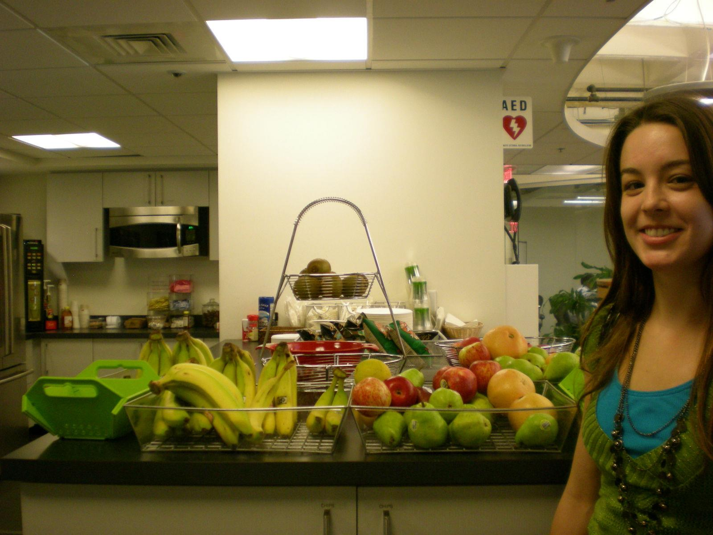

Let's Build Better Financial Futures Together
After a 13 year stint in the tech space I'm setting out to build out my financial planning career. My pro bono counseling experience is what finally convinced me to take the leap. I'm able to translate a vast amount of my existing career toolset to financial planning.
I'm familiar with the rhythms of designing a plan full of critical highly minute details and simplifying that in order to present it to highly capable executive stakeholders, only to have life happen along the way and re-adjust and replan as things happen.
Some of the best work we all do is to bring a good sense of connection and purpose into the room with us, even when others are worn out or facing a tough set of options we are there to light the path forward, as a Program Manager of Financial Planner. Excited to see what this next chapter has in store, feel free to reach out I'm always open to chat, especially about "boring" financial planning/tax minutiae. :-)
What I've Been Up To
Volunteer: 3rd Decade
Financial Mentors work with each Participant to help them take charge of their financial situation by understanding their own behavior(s) and adjusting those behaviors to fit their goals. Financial mentoring is designed to develop a Participant’s capability to manage their own finances and sustain economic security in accordance with their self-defined goals. It is also designed to build confidence in the financial industry through conflict-free fiduciary standards. The Financial Mentor meets with the Participant three times over 24 months to help set goals, monitor progress, and educate towards empowerment.
Program Manager: Apple
Use your imagination here.
Product Manager: Tripadvisor
How do you identify all of the closed restaurants in the world? How do you design self-service features that help users help themselves? How do you leverage millions of mobile users to give you accurate, in destination information?
These are the kinds of questions I got to figure out the answers to on a day-to-day basis.
Exploring Brazil
A week in Rio (Ipanema) and a few days in Sao Paulo, and only one incident of getting trapped in an elevator with no cell reception (Fun fact "Socorro"is how you say "Help" in portugese)
Visiting Tripadvisor's London Office
Just in time for some Holiday Party bonding with the incredible UK Customer Support team :-)
Cat Fostering

Cambridge Innovation Center: Setting up an office for biotech startup
The stocked kitchen at CIC really takes the edge off dealing with lawyers and insurance and payroll!
Horseback riding up to the Great Wall of China
And subsequent walking around on an abandoned part of the Great Wall.
A rapid but beautiful blur of 4 years of the firehose
Mostly Economics and Neuroscience, but no one can escape Physics, Calc, Chem, Biology and throw in Genetics and Orgo just for fun.
{kind=link}
{kind=link}
{kind=link}
{kind=link}
{kind=link}
{kind=link}
{kind=link}
{kind=link}
{kind=link}